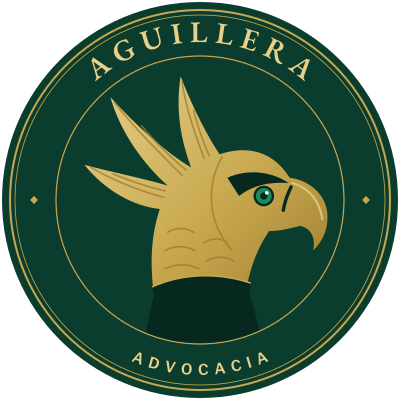
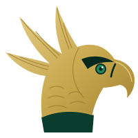
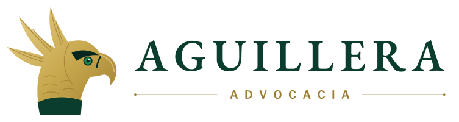
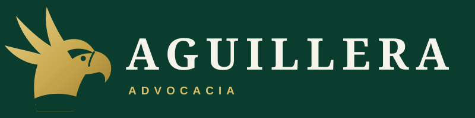
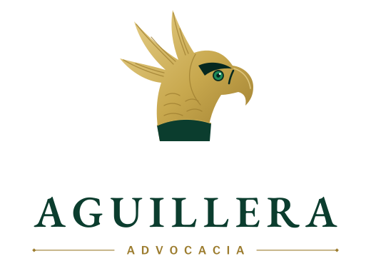
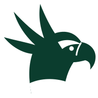

ADVOCACIA
Ver o todo. Alcançar o objetivo. Proteger o que é seu.
Manual da marca · proposta para aprovação · outubro de 2026 · uso interno
01 · A ideia
Aguilera vem de águila. Em espanhol, a palavra designa o rochedo alto onde as águias fazem o ninho. A marca não inventa um símbolo: ela revela o que o sobrenome sempre carregou.
Entre as águias brasileiras, a escolhida é a harpia (Harpia harpyja), o gavião-real: a maior ave de rapina do Brasil e uma das águias mais poderosas do planeta. Coroa de penas erguida, olhar frontal, garras que não soltam o que agarram.
É uma ave brasileira, de floresta, rara e protegida. Não é a águia heráldica importada dos brasões europeus e americanos: é a águia daqui. Para um escritório nascido em Corumbá, entre o Pantanal e a fronteira, essa origem importa.
A grafia com dois “l”, Aguillera, é a do sobrenome do titular e passa a ser a grafia oficial da marca.
02 · Da ave ao método
Cada atributo do símbolo corresponde a uma etapa do método de trabalho e à missão: entender o caso, entender o objetivo, alcançá-lo com efetividade e, no cenário adverso, reduzir o dano.

03 · O símbolo
Penacho em três lâminas, com nervuras de gravura. A marca registrada da harpia. Erguido, forma uma coroa e lembra as três instâncias por onde um caso pode subir. Os fios internos remetem às gravuras em metal dos selos e das cartas antigas.
O olho verde. Único ponto de cor fria no ouro: é para onde o olhar vai primeiro. Verde-esmeralda, o mesmo verde do Pantanal e da marca, com um ponto de luz que dá vida à ave. Voltado para a direita, aponta o futuro, o objetivo. A sobrancelha pesada dá firmeza.
Bico curvo. Precisão. A curva é a mesma das serifas da EB Garamond, que dá voz ao nome.
Colar escuro. A faixa negra do peito da harpia vira base: firmeza, sobriedade, fundamento.
Silhueta sólida: lê-se bem de 24 px a fachada. Abaixo de 48 px, os fios de gravura somem sem prejudicar a leitura.
04 · Assinaturas

Horizontal, principal. Cabeçalho do site, timbre, assinatura de e-mail. Arquivo: logo-horizontal.svg

Negativo. Sobre o verde institucional. Arquivo: logo-horizontal-negativo.svg

Vertical. Placa, fachada, capa de apresentação. Arquivo: logo-vertical.svg
Selo, a assinatura clássica. Medalha com o nome no arco superior e “Advocacia” no inferior. Timbre de pareceres, lacre de documentos, capa de apresentação. Arquivo: selo.svg

Monocromático. Carimbo, gravação, fax, impressão a uma cor. Arquivo: simbolo-monocromatico.svg
05 · Cores
O verde e o ouro já são os do site atual. A marca nova entra sem ruptura: soma o esmeralda do olho, o cinza-ardósia da plumagem da harpia e o branco do seu peito. O esmeralda é tempero, não base: aparece só no olho e em detalhes mínimos.
06 · Tipografia
AGUILLERA
EB Garamond · nome, títulos, citações. A serifa da tradição jurídica e da literatura.
ADVOCACIA
Libre Franklin · descritores, menus, textos de apoio. Clareza contemporânea.
Ambas têm licença livre (SIL Open Font License) e já estão no repositório, em assets/fonts/.
07 · Assinatura verbal
Todos compatíveis com o Provimento 205/2021 da OAB: nenhum promete resultado, nenhum se compara a outros escritórios.
08 · Aplicações
Jocsan Aguillera
ADVOGADO · OAB/MS 18.115
(67) 99832-5997 · Corumbá — MS
Cartão de visita, frente.
Verso: o selo, sobre Pena Branca.
AGUILLERA ADVOCACIA · RUA FIRMO DE MATOS, 1464 · CORUMBÁ — MS
Papel timbrado e peças processuais.
Avatar para Instagram, WhatsApp Business e LinkedIn: o símbolo na medalha, sem texto, para continuar legível em miniatura. Arquivo: avatar.svg
09 · Uso correto
10 · Próximos passos
Esta é uma proposta conceitual. Antes de imprimir ou registrar, três cuidados profissionais.
avatar.svg, numa única alteração.